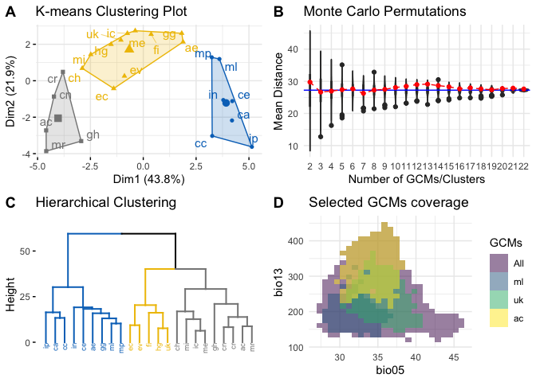
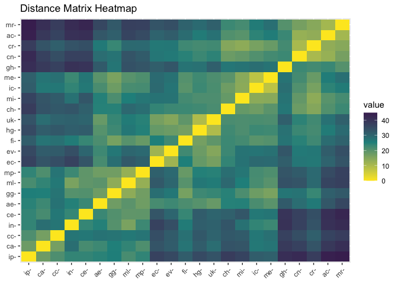
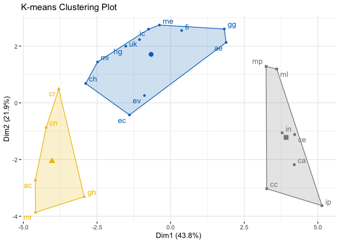
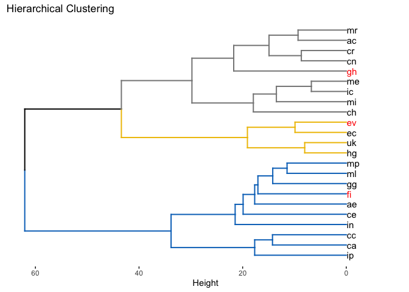
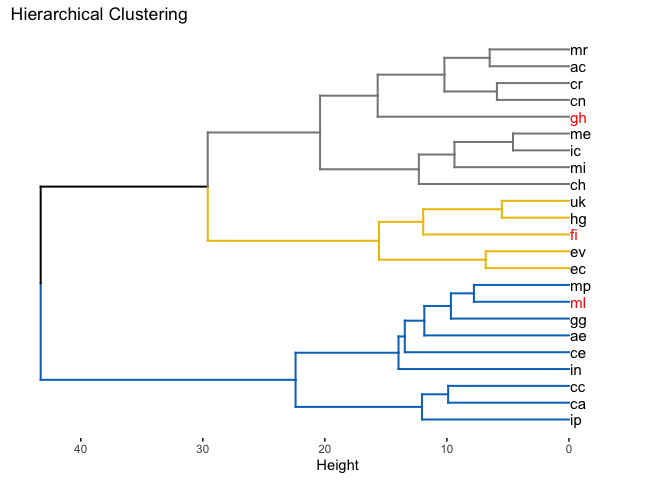
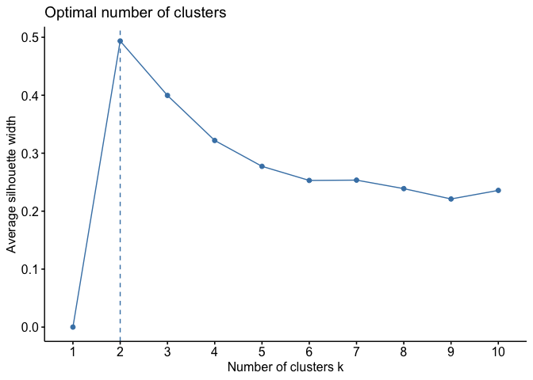

chooseGCM
The goal of chooseGCM is to help researchers aiming to project Species Distribution Models and Ecological Niche Models to future scenarios by applying a selection routine to the General Circulation Models.
Installation
You can install the development version of chooseGCM from GitHub with:
install.packages("devtools")
devtools::install_github("luizesser/chooseGCM")Tutorial
This is a basic tutorial which shows you how to use the functions in chooseGCM. After installing the package, we need to open it:
Downloading WorldClim 2.1 Data
First, we need to use only one time period. Here we use 2090 so the difference between models is more conspicuous. In the same way we are considering the SSP585, which is the more dramatic pathway. The resolution is the lowest to be quicker. The aim here is to maintain all parameters equal, but General Circulation Models (GCMs). In this way we know that the only source of variation comes from them. Note that if you receive a timeout error you can increase timeout value by running , where 600 is the value in seconds that will be enough to download the data.
worldclim_data(period = "future", variable = "bioc", year = "2090", gcm = "all", ssp = "585", resolution = 10)Importing and Transforming Data
Now let’s import GCMs to R in a list of stacks and name the list with the names of the GCMs.
s <- import_gcms()
names(s) <- gsub("_ssp585_10_2090", "", names(s))In each function, data will be transformed. To do that you will always need to provide at least: (1) the list of stacks, (2) the variables you want to use in analysis and (3) the shapefile of your study area. You don’t need to previously mask and subset your data, once the functions will perform this task internally for you. Note that the results from these functions are highly sensitive to variables and to study area. In this sense, the decision on what variables should be considered and what is the study area must be carefully made considering biological aspects of the studied group.
Straigthforward Approach
There is the option to run each function in separate to better understand what is happening and to better parameterize each step. However there is a wrapper to help run everything at once and could be an alternative to have a broad perspective. compare_gcms() will return a list with a vector called suggested_gcms and a Figure called statistics_gcms. We suggest that this Figure could also be included as it is in supplementary data from studies using this package.
res <- compare_gcms(s, var_names, study_area_parana, k = 3)
#> CRS from s and study_area are not identical. Reprojecting study area.
#> Warning: The `<scale>` argument of `guides()` cannot be `FALSE`. Use "none" instead as
#> of ggplot2 3.3.4.
#> ℹ The deprecated feature was likely used in the factoextra package.
#> Please report the issue at <https://github.com/kassambara/factoextra/issues>.
#> This warning is displayed once every 8 hours.
#> Call `lifecycle::last_lifecycle_warnings()` to see where this warning was
#> generated.
res$statistics_gcms
The aim of this function is to inform the minimum required so users can follow with their workflow in a more straightforward fashion (more on each plot further). If we see the D plot in the Figure, we can infer if the selected GCMs encompass the environmental variety of all GCMs. The focus should be to cover the core environment and not outlier regions on the environmental space. Above that, in plot B, the Monte Carlo permutation between GCMs is presented as a violin plot. Plots A and C are both clusterization methods that can be used to select GCMs. Clusterization will be adapted to the number of clusters k designated in the function. Lastly, suggested GCMs were “uk”, “ml” and “ac”. Those suggestions are the gcms that are closer to the centroid of each K-means cluster, thus they better represent the variation within each cluster.
Deep-dive Approach
As an alternative for experienced modelers that want to deeply understand the impacts of decisions on GCMs selection, we prepared a set of functions to analyze data more carefully. Each function in the wrapper mentioned above is available to be explored as stand-alone, ranging from exploratory analysis to cluster analysis and methods to determine the optimum number of clusters.
Exploratory Analysis
In chooseGCM we implemented functions to analyze GCMs attributes. summary_gcms is the only function available that describes variations within GCMs. It returns the internal information regarding each variable, as reads: minimum value (min), first quartile (quantile_0.25), second quartile (median), average (mean), third quartile (quantile_0.75), maximum value (max), standard deviation (sd), number of NAs (NAs) and the total number of cells (n_cells). This function returns a list of GCMs with a table associated with each of them.
# Summary of GCMs
s_sum <- summary_gcms(s, var_names, study_area_parana)
#> CRS from s and study_area are not identical. Reprojecting study area.
s_sum
#> $ac
#> min quantile_0.25 median mean quantile_0.75 max sd NAs
#> bio5 30.0 33.100 35.00 34.86172 36.600 38.9 2.074876 0
#> bio13 219.9 281.475 312.55 322.36596 367.075 447.1 49.906181 0
#> bio15 21.1 31.375 36.00 35.81045 40.000 52.8 6.702049 0
#> n_cells
#> bio5 708
#> bio13 708
#> bio15 708
#>
#> $ae
#> min quantile_0.25 median mean quantile_0.75 max sd NAs
#> bio5 28.5 31.70 33.9 33.78263 35.800 39.0 2.457254 0
#> bio13 160.8 205.05 235.0 232.06681 253.825 346.4 33.968277 0
#> bio15 13.6 23.00 27.1 27.88164 32.400 49.9 7.270607 0
#> n_cells
#> bio5 708
#> bio13 708
#> bio15 708
#>
#> $ca
#> min quantile_0.25 median mean quantile_0.75 max sd NAs
#> bio5 32.5 36.500 40.00 39.68842 42.8 45.8 3.514195 0
#> bio13 127.5 159.975 175.05 179.44336 196.3 257.1 24.683431 0
#> bio15 25.8 35.275 41.10 41.37500 46.7 63.0 8.097520 0
#> n_cells
#> bio5 708
#> bio13 708
#> bio15 708
#>
#> $cc
#> min quantile_0.25 median mean quantile_0.75 max sd NAs
#> bio5 32.6 37.000 40.55 40.15946 43.20 46.2 3.572662 0
#> bio13 120.6 162.975 174.75 179.40975 190.85 259.9 22.865425 0
#> bio15 25.7 35.800 41.30 41.72189 46.80 64.0 8.117374 0
#> n_cells
#> bio5 708
#> bio13 708
#> bio15 708
#>
#> $ce
#> min quantile_0.25 median mean quantile_0.75 max sd NAs
#> bio5 28.3 31.000 33.40 33.13842 35.200 37.6 2.403073 0
#> bio13 154.9 188.400 207.70 210.40833 228.425 352.4 30.119732 0
#> bio15 22.0 30.075 34.45 35.72034 39.700 61.8 7.868957 0
#> n_cells
#> bio5 708
#> bio13 708
#> bio15 708
#>
#> $ch
#> min quantile_0.25 median mean quantile_0.75 max sd NAs
#> bio5 30.1 32.800 35.05 34.77429 36.800 38.2 2.234395 0
#> bio13 157.6 197.775 227.85 234.49393 265.825 349.1 42.809635 0
#> bio15 21.1 29.475 34.10 34.05184 37.600 50.8 6.025080 0
#> n_cells
#> bio5 708
#> bio13 708
#> bio15 708
#>
#> $cn
#> min quantile_0.25 median mean quantile_0.75 max sd NAs
#> bio5 29.6 32.300 34.20 34.04647 35.900 37.8 2.027931 0
#> bio13 161.4 201.850 231.45 242.94816 284.025 365.6 50.184711 0
#> bio15 21.6 29.075 33.75 33.78065 37.800 50.2 5.937047 0
#> n_cells
#> bio5 708
#> bio13 708
#> bio15 708
#>
#> $cr
#> min quantile_0.25 median mean quantile_0.75 max sd NAs
#> bio5 29.5 32.200 33.90 33.75946 35.400 37.4 1.883084 0
#> bio13 153.0 196.975 224.15 229.00833 258.900 324.9 38.503760 0
#> bio15 17.8 27.200 32.85 33.04746 37.925 52.0 7.394922 0
#> n_cells
#> bio5 708
#> bio13 708
#> bio15 708
#>
#> $ec
#> min quantile_0.25 median mean quantile_0.75 max sd NAs
#> bio5 27.9 30.675 33.4 33.69082 36.50 40.5 3.351993 0
#> bio13 150.3 191.325 220.2 223.09661 250.45 346.0 38.320731 0
#> bio15 23.3 29.900 32.9 33.72924 37.40 48.7 5.068337 0
#> n_cells
#> bio5 708
#> bio13 708
#> bio15 708
#>
#> $ev
#> min quantile_0.25 median mean quantile_0.75 max sd NAs
#> bio5 28.1 30.900 34.00 34.14223 37.100 40.9 3.463340 0
#> bio13 145.4 179.250 201.95 208.68517 233.375 360.9 37.829991 0
#> bio15 24.0 30.375 33.90 34.71398 37.925 52.0 5.387966 0
#> n_cells
#> bio5 708
#> bio13 708
#> bio15 708
#>
#> $fi
#> min quantile_0.25 median mean quantile_0.75 max sd NAs
#> bio5 28.8 31.900 33.9 33.70833 35.500 38.4 2.115846 0
#> bio13 159.8 201.875 220.0 225.59816 249.950 337.8 31.579720 0
#> bio15 17.7 25.575 29.6 30.54816 34.125 52.2 6.641921 0
#> n_cells
#> bio5 708
#> bio13 708
#> bio15 708
#>
#> $gg
#> min quantile_0.25 median mean quantile_0.75 max sd NAs
#> bio5 28.2 30.800 32.9 32.66977 34.5 36.6 2.085673 0
#> bio13 142.0 176.300 197.1 196.51299 213.4 318.6 24.392013 0
#> bio15 11.2 18.775 22.5 23.92542 27.7 46.7 7.175692 0
#> n_cells
#> bio5 708
#> bio13 708
#> bio15 708
#>
#> $gh
#> min quantile_0.25 median mean quantile_0.75 max sd NAs
#> bio5 28.0 30.7 32.70 32.66201 34.6 36.5 2.203157 0
#> bio13 143.7 181.3 208.15 209.34831 237.4 298.2 31.727428 0
#> bio15 19.1 25.6 28.10 29.46328 32.8 50.2 5.975185 0
#> n_cells
#> bio5 708
#> bio13 708
#> bio15 708
#>
#> $hg
#> min quantile_0.25 median mean quantile_0.75 max sd NAs
#> bio5 30.9 34.50 36.7 36.54675 38.7 41.1 2.422012 0
#> bio13 167.8 210.95 235.4 244.28701 275.6 379.1 41.653356 0
#> bio15 15.1 22.90 26.9 28.02090 31.9 48.7 6.589878 0
#> n_cells
#> bio5 708
#> bio13 708
#> bio15 708
#>
#> $ic
#> min quantile_0.25 median mean quantile_0.75 max sd NAs
#> bio5 28.3 30.7 32.50 32.42048 34.000 36.4 1.904782 0
#> bio13 137.3 170.3 186.30 193.21328 213.925 298.1 28.865385 0
#> bio15 14.2 23.7 27.75 28.84816 33.100 51.6 7.323494 0
#> n_cells
#> bio5 708
#> bio13 708
#> bio15 708
#>
#> $`in`
#> min quantile_0.25 median mean quantile_0.75 max sd NAs
#> bio5 28.4 30.80 32.5 32.48390 34.000 37.0 1.916037 0
#> bio13 144.7 184.70 199.9 202.81709 214.100 373.5 25.584168 0
#> bio15 13.6 23.55 28.0 28.86511 33.725 53.0 8.048436 0
#> n_cells
#> bio5 708
#> bio13 708
#> bio15 708
#>
#> $ip
#> min quantile_0.25 median mean quantile_0.75 max sd NAs
#> bio5 29.5 32.775 35.85 35.53531 38.000 40.7 3.007477 0
#> bio13 146.1 181.250 194.60 197.31102 211.075 303.5 21.489514 0
#> bio15 15.5 26.300 32.80 33.45918 39.500 61.9 9.740520 0
#> n_cells
#> bio5 708
#> bio13 708
#> bio15 708
#>
#> $me
#> min quantile_0.25 median mean quantile_0.75 max sd NAs
#> bio5 27.3 29.600 31.40 31.35099 32.90 35.3 1.922350 0
#> bio13 146.2 178.975 199.95 204.60650 226.55 316.6 30.141320 0
#> bio15 15.0 25.900 28.80 29.88912 33.70 51.1 6.898089 0
#> n_cells
#> bio5 708
#> bio13 708
#> bio15 708
#>
#> $mi
#> min quantile_0.25 median mean quantile_0.75 max sd NAs
#> bio5 29.4 32.0 33.1 33.08404 34.200 37.0 1.512676 0
#> bio13 156.9 190.6 209.2 215.32712 239.725 324.6 30.799656 0
#> bio15 16.5 25.9 29.3 29.75071 33.400 45.1 5.750529 0
#> n_cells
#> bio5 708
#> bio13 708
#> bio15 708
#>
#> $ml
#> min quantile_0.25 median mean quantile_0.75 max sd NAs
#> bio5 28.1 30.500 32.30 32.26709 34.000 36.9 1.986405 0
#> bio13 141.3 173.250 188.75 190.07288 202.850 339.6 24.659868 0
#> bio15 18.0 28.475 33.00 34.32472 39.825 58.6 8.764426 0
#> n_cells
#> bio5 708
#> bio13 708
#> bio15 708
#>
#> $mp
#> min quantile_0.25 median mean quantile_0.75 max sd NAs
#> bio5 28.0 30.300 32.0 32.00975 33.700 36.0 1.958004 0
#> bio13 150.3 189.200 208.4 210.17571 228.250 307.4 28.119429 0
#> bio15 15.0 25.375 29.4 30.96271 36.025 54.1 8.204866 0
#> n_cells
#> bio5 708
#> bio13 708
#> bio15 708
#>
#> $mr
#> min quantile_0.25 median mean quantile_0.75 max sd NAs
#> bio5 27.9 30.40 32.10 31.95650 33.500 36.2 1.846094 0
#> bio13 167.5 210.45 243.45 244.38249 275.625 330.1 38.147684 0
#> bio15 17.9 26.30 32.30 32.15833 37.100 50.9 7.384676 0
#> n_cells
#> bio5 708
#> bio13 708
#> bio15 708
#>
#> $uk
#> min quantile_0.25 median mean quantile_0.75 max sd NAs
#> bio5 31.0 34.10 36.30 36.29322 38.425 41.5 2.521581 0
#> bio13 154.9 198.90 228.45 234.27839 267.700 379.0 44.507444 0
#> bio15 17.2 25.75 30.40 30.85268 35.400 49.4 6.709703 0
#> n_cells
#> bio5 708
#> bio13 708
#> bio15 708Regarding the exploratory comparison between GCMs, two functions are available: cor_gcms and dist_gcms. The first is designed to return a list with a correlation matrix between GCMs and a plot of this matrix. We noticed while building this package that (as expected) Pearson correlation values are always very high, rarely reaching values bellow 0.95. In this way we found that this function could not be so informative and decided to present a distance function as seen bellow. However it is noteworthy that through this function the user can change the method used to obtain correlation values. See ?cor_gcms for available methods.
# Pearson Correlation between GCMs
s_cor <- cor_gcms(s, var_names, study_area_parana, scale = TRUE, method = "pearson")
#> CRS from s and study_area are not identical. Reprojecting study area.
#> Scale for fill is already present.
#> Adding another scale for fill, which will replace the existing scale.
s_cor
#> $cor_matrix
#> ac ae ca cc ce ch cn
#> ac 1.0000000 0.8222687 0.7474311 0.7774549 0.7167943 0.9268093 0.9705559
#> ae 0.8222687 1.0000000 0.9075920 0.8684687 0.9056885 0.8965440 0.8660992
#> ca 0.7474311 0.9075920 1.0000000 0.9521852 0.9178031 0.8053916 0.7686080
#> cc 0.7774549 0.8684687 0.9521852 1.0000000 0.8748224 0.8134863 0.7971570
#> ce 0.7167943 0.9056885 0.9178031 0.8748224 1.0000000 0.8312629 0.7644923
#> ch 0.9268093 0.8965440 0.8053916 0.8134863 0.8312629 1.0000000 0.9490186
#> cn 0.9705559 0.8660992 0.7686080 0.7971570 0.7644923 0.9490186 1.0000000
#> cr 0.9691325 0.8842913 0.8096930 0.8327782 0.7979551 0.9630363 0.9822591
#> ec 0.8343692 0.9127519 0.8020561 0.7876387 0.8074572 0.9011960 0.8806919
#> ev 0.8169534 0.9056375 0.8176688 0.8129450 0.8414429 0.9033529 0.8796525
#> fi 0.8569444 0.9222062 0.8706602 0.8629006 0.9037687 0.9076577 0.8968552
#> gg 0.8361983 0.9446917 0.8888227 0.8699211 0.9263903 0.8969800 0.8727610
#> gh 0.9095465 0.8323123 0.7526228 0.7742805 0.7357975 0.8831682 0.9156861
#> hg 0.8803762 0.9315005 0.8310857 0.8190898 0.8321600 0.9112541 0.9105055
#> ic 0.9054854 0.9192470 0.8788078 0.8766609 0.8760764 0.9474036 0.9280161
#> in 0.7282736 0.8899251 0.8582211 0.8718917 0.9011865 0.8105449 0.7691032
#> ip 0.6779757 0.8951112 0.9425874 0.9230164 0.9029984 0.7510189 0.7040445
#> me 0.8923514 0.9315303 0.8733456 0.8653210 0.8743066 0.9338734 0.9203804
#> mi 0.9337973 0.8932566 0.8100739 0.8231812 0.8117599 0.9402452 0.9421741
#> ml 0.7753140 0.9282318 0.8972975 0.8748226 0.9370699 0.8479921 0.8126015
#> mp 0.7947834 0.9473006 0.9215585 0.8696344 0.9364209 0.8622084 0.8305043
#> mr 0.9795831 0.7847647 0.7157671 0.7568350 0.6828909 0.9117137 0.9534145
#> uk 0.8668021 0.9425931 0.8568111 0.8376745 0.8446538 0.9187139 0.9032580
#> cr ec ev fi gg gh hg
#> ac 0.9691325 0.8343692 0.8169534 0.8569444 0.8361983 0.9095465 0.8803762
#> ae 0.8842913 0.9127519 0.9056375 0.9222062 0.9446917 0.8323123 0.9315005
#> ca 0.8096930 0.8020561 0.8176688 0.8706602 0.8888227 0.7526228 0.8310857
#> cc 0.8327782 0.7876387 0.8129450 0.8629006 0.8699211 0.7742805 0.8190898
#> ce 0.7979551 0.8074572 0.8414429 0.9037687 0.9263903 0.7357975 0.8321600
#> ch 0.9630363 0.9011960 0.9033529 0.9076577 0.8969800 0.8831682 0.9112541
#> cn 0.9822591 0.8806919 0.8796525 0.8968552 0.8727610 0.9156861 0.9105055
#> cr 1.0000000 0.8776602 0.8724489 0.9098074 0.9079947 0.9211805 0.9140094
#> ec 0.8776602 1.0000000 0.9769223 0.8868706 0.8580796 0.8348469 0.9380815
#> ev 0.8724489 0.9769223 1.0000000 0.9062918 0.8722129 0.8188413 0.9419239
#> fi 0.9098074 0.8868706 0.9062918 1.0000000 0.9519619 0.8772080 0.9532942
#> gg 0.9079947 0.8580796 0.8722129 0.9519619 1.0000000 0.8811838 0.9099544
#> gh 0.9211805 0.8348469 0.8188413 0.8772080 0.8811838 1.0000000 0.8726213
#> hg 0.9140094 0.9380815 0.9419239 0.9532942 0.9099544 0.8726213 1.0000000
#> ic 0.9546310 0.8483330 0.8627452 0.9296029 0.9459835 0.8699525 0.9063314
#> in 0.8100512 0.7569568 0.7872102 0.8826283 0.9284360 0.7320099 0.8306961
#> ip 0.7559461 0.7610442 0.7798539 0.8325963 0.8884159 0.7182954 0.7899106
#> me 0.9459077 0.8525521 0.8606391 0.9276727 0.9555618 0.8781822 0.9111763
#> mi 0.9673688 0.8619600 0.8608742 0.9137696 0.9209719 0.8794114 0.9174088
#> ml 0.8521561 0.8134999 0.8414814 0.9292883 0.9662060 0.8059491 0.8796716
#> mp 0.8569821 0.8328734 0.8502194 0.9424687 0.9471829 0.8181316 0.8958994
#> mr 0.9639171 0.8059929 0.7903033 0.8414630 0.8243951 0.9301743 0.8539005
#> uk 0.9122260 0.9513474 0.9587427 0.9359819 0.9042681 0.8424736 0.9848288
#> ic in ip me mi ml mp
#> ac 0.9054854 0.7282736 0.6779757 0.8923514 0.9337973 0.7753140 0.7947834
#> ae 0.9192470 0.8899251 0.8951112 0.9315303 0.8932566 0.9282318 0.9473006
#> ca 0.8788078 0.8582211 0.9425874 0.8733456 0.8100739 0.8972975 0.9215585
#> cc 0.8766609 0.8718917 0.9230164 0.8653210 0.8231812 0.8748226 0.8696344
#> ce 0.8760764 0.9011865 0.9029984 0.8743066 0.8117599 0.9370699 0.9364209
#> ch 0.9474036 0.8105449 0.7510189 0.9338734 0.9402452 0.8479921 0.8622084
#> cn 0.9280161 0.7691032 0.7040445 0.9203804 0.9421741 0.8126015 0.8305043
#> cr 0.9546310 0.8100512 0.7559461 0.9459077 0.9673688 0.8521561 0.8569821
#> ec 0.8483330 0.7569568 0.7610442 0.8525521 0.8619600 0.8134999 0.8328734
#> ev 0.8627452 0.7872102 0.7798539 0.8606391 0.8608742 0.8414814 0.8502194
#> fi 0.9296029 0.8826283 0.8325963 0.9276727 0.9137696 0.9292883 0.9424687
#> gg 0.9459835 0.9284360 0.8884159 0.9555618 0.9209719 0.9662060 0.9471829
#> gh 0.8699525 0.7320099 0.7182954 0.8781822 0.8794114 0.8059491 0.8181316
#> hg 0.9063314 0.8306961 0.7899106 0.9111763 0.9174088 0.8796716 0.8958994
#> ic 1.0000000 0.8999898 0.8308173 0.9892832 0.9655308 0.9151176 0.9152311
#> in 0.8999898 1.0000000 0.9025073 0.9086389 0.8676851 0.9544238 0.9068221
#> ip 0.8308173 0.9025073 1.0000000 0.8357345 0.7720280 0.9178104 0.8995446
#> me 0.9892832 0.9086389 0.8357345 1.0000000 0.9647568 0.9274873 0.9223096
#> mi 0.9655308 0.8676851 0.7720280 0.9647568 1.0000000 0.8871476 0.8759186
#> ml 0.9151176 0.9544238 0.9178104 0.9274873 0.8871476 1.0000000 0.9691976
#> mp 0.9152311 0.9068221 0.8995446 0.9223096 0.8759186 0.9691976 1.0000000
#> mr 0.8886704 0.7098175 0.6638051 0.8707488 0.9205766 0.7609427 0.7701088
#> uk 0.9158877 0.8344505 0.8072126 0.9200012 0.9172428 0.8817465 0.8961938
#> mr uk
#> ac 0.9795831 0.8668021
#> ae 0.7847647 0.9425931
#> ca 0.7157671 0.8568111
#> cc 0.7568350 0.8376745
#> ce 0.6828909 0.8446538
#> ch 0.9117137 0.9187139
#> cn 0.9534145 0.9032580
#> cr 0.9639171 0.9122260
#> ec 0.8059929 0.9513474
#> ev 0.7903033 0.9587427
#> fi 0.8414630 0.9359819
#> gg 0.8243951 0.9042681
#> gh 0.9301743 0.8424736
#> hg 0.8539005 0.9848288
#> ic 0.8886704 0.9158877
#> in 0.7098175 0.8344505
#> ip 0.6638051 0.8072126
#> me 0.8707488 0.9200012
#> mi 0.9205766 0.9172428
#> ml 0.7609427 0.8817465
#> mp 0.7701088 0.8961938
#> mr 1.0000000 0.8358686
#> uk 0.8358686 1.0000000
#>
#> $cor_plot
The function dist_gcms is very similar to the previous cor_gcms, but now for distances. This function has the same output: a list with two slots. One is the distance matrix obtained (distances), while the second is the plotted matrix (heatmap). Here the differences between GCMs are way more clear than in the previous plot. As in was it the previous function, methods can also be changed for a number of different distances. For a complete list of available methods see ?dist_gcms. To build a distance matrix considering multiple variables to each GCM we use a flattening strategy, where values are concatenated in one unique vector to each GCM. In the process, we need to scale variables so they end up with the same measure. This matrix is also used to calculate the clusters in the compare_gcms function and in further presented kmeans_gcms function.
# Euclidean Distance between GCMs
s_dist <- dist_gcms(s, var_names, study_area_parana, method = "euclidean")
#> CRS from s and study_area are not identical. Reprojecting study area.
s_dist
#> $distances
#> ac ae ca cc ce ch cn
#> ae 27.457895
#> ca 32.732203 19.798860
#> cc 30.725172 23.621087 14.241854
#> ce 34.660621 20.001733 18.672952 23.043507
#> ch 17.620294 20.948998 28.732019 28.128117 26.754119
#> cn 11.175950 23.832900 31.329937 29.333598 31.607333 14.705889
#> cr 11.442906 22.154824 28.412712 26.633714 29.275833 12.521988 8.675084
#> ec 26.506714 19.238150 28.977199 30.013939 28.579129 20.472582 22.496777
#> ev 27.865456 20.007141 27.810948 28.168904 25.934520 20.247885 22.594555
#> fi 24.634157 18.165940 23.423478 24.115879 20.204291 19.791814 20.917458
#> gg 26.359949 15.317246 21.716675 23.490313 17.670668 20.904802 23.232477
#> gh 19.588360 26.670797 32.394042 30.943534 33.477561 22.262089 18.911886
#> hg 22.526522 17.046255 26.768161 27.702366 26.682906 19.402577 19.484241
#> ic 20.023255 18.508222 22.673719 22.873663 22.927799 14.937002 17.474431
#> in 33.950895 21.608741 24.523987 23.311700 20.473567 28.349045 31.296391
#> ip 36.959802 21.093560 15.605901 18.071093 20.284986 32.498892 35.432236
#> me 21.369263 17.042550 23.179037 23.902055 23.090934 16.748404 18.377875
#> mi 16.758037 21.279227 28.384267 27.387319 28.258000 15.921046 15.661970
#> ml 30.872612 17.448232 20.872570 23.043491 16.338584 25.393260 28.194756
#> mp 29.504725 14.951613 18.241404 23.516182 16.422628 24.176679 26.814186
#> mr 9.306375 30.216354 34.723419 32.117069 36.676655 19.352276 14.057585
#> uk 23.770265 15.605130 24.645638 26.240896 25.670581 18.569218 20.257831
#> cr ec ev fi gg gh hg
#> ae
#> ca
#> cc
#> ce
#> ch
#> cn
#> cr
#> ec 22.780809
#> ev 23.260949 9.894212
#> fi 19.560086 21.906508 19.937655
#> gg 19.755666 24.536227 23.282458 14.275065
#> gh 18.285302 26.468458 27.721383 22.822875 22.450349
#> hg 19.099005 16.206729 15.695823 14.075731 19.544146 23.245220
#> ic 13.872819 25.364769 24.129542 17.280753 15.137311 23.487476 19.933441
#> in 28.385959 32.109024 30.044207 22.313464 17.423388 33.716675 26.799015
#> ip 32.175715 31.837877 30.559121 26.648202 21.756368 34.568640 29.852961
#> me 15.147923 25.009482 24.313969 17.516066 13.729787 22.732162 19.411087
#> mi 11.765269 24.198469 24.293452 19.125616 18.309482 22.617182 18.717687
#> ml 25.043041 28.127092 25.931371 17.319323 11.973056 28.690830 22.592768
#> mp 24.630915 26.626136 25.206530 15.622025 14.968311 27.775635 21.014155
#> mr 12.371887 28.687594 29.825044 25.932873 27.293150 17.210474 24.894862
#> uk 19.296049 14.366086 13.229262 16.479221 20.151788 25.850089 8.022238
#> ic in ip me mi ml mp
#> ae
#> ca
#> cc
#> ce
#> ch
#> cn
#> cr
#> ec
#> ev
#> fi
#> gg
#> gh
#> hg
#> ic
#> in 20.597166
#> ip 26.789418 20.336277
#> me 6.742450 19.686381 26.397241
#> mi 12.092083 23.691342 31.097544 12.227094
#> ml 18.975546 13.904473 18.672125 17.538492 21.879667
#> mp 18.962846 19.881161 20.642960 18.153856 22.942395 11.430818
#> mr 21.731544 35.084958 37.764252 23.415458 18.355224 31.844637 31.228167
#> uk 18.889262 26.500209 28.597273 18.421590 18.736489 22.397128 20.984422
#> mr
#> ae
#> ca
#> cc
#> ce
#> ch
#> cn
#> cr
#> ec
#> ev
#> fi
#> gg
#> gh
#> hg
#> ic
#> in
#> ip
#> me
#> mi
#> ml
#> mp
#> mr
#> uk 26.386464
#>
#> $heatmap
Obtain Clusters
Clusters in chooseGCM are obtained through K-means, a unsupervised machine learning algorithm. K in this case is the number of GCMs the modeler wants to use in projections. As in the previous dist_gcms function, we can address different methods to obtain the distance matrix by changing the method argument. The K-means algorithm uses the distance matrix to obtain clusters, thus a deep analysis of distances using dist_gcms function could prove to be useful. As in compare_gcms function, this function returns the K-means plot and a set of suggested GCMs, i.e. the GCMs closer to the centroid of each clusters.
kmeans_gcms(s, var_names, study_area_parana, k = 3, method = "euclidean")
#> CRS from s and study_area are not identical. Reprojecting study area.
#> $suggested_gcms
#> 1 2 3
#> "uk" "cr" "ml"
#>
#> $kmeans_plot
Alternatively, instead of using distances, one could run the analysis with raw environmental data by not setting any value to method (note how axis change). As in the previous case, the function also returns GCMs that are closer to the centroids. Note however that the plot below has a cluster with two GCMs, thus both have the same distance from the centroid. In this case, the function randomly suggests one of them. To perform this analysis without a distance matrix, we use only the mean values of each variable selected. In this way, the variability within variables is not considered, as in the above solution. But we recognize that for some purpose it could be useful to have a plot with raw variables as axis as provided here.
kmeans_gcms(s, var_names, study_area_parana, k = 3)
#> CRS from s and study_area are not identical. Reprojecting study area.
#> $suggested_gcms
#> [1] "ic" "gh" "in"
#>
#> $kmeans_plot
We can also obtain clusters through hierarchical clustering. In this case, however, the function doesn’t suggest any GCM. It is up to the user to define which GCMs are most suitable in this case. Hierarchical clustering is useful to visually inform the relationship between groups and could also be used to choose a number of clusters to build (together with metrics in the next section).
hclust_gcms(s, var_names, study_area_parana, k = 3)
#> CRS from s and study_area are not identical. Reprojecting study area.
#> $suggested_gcms
#> [1] "gh" "fi" "ev"
#>
#> $dend_plot
In this function we also provide a n argument to inform the amount of data to be used in the clustering. This proved valuable when using high resolution data.
hclust_gcms(s, var_names, study_area_parana, k = 3, n = 1000)
#> CRS from s and study_area are not identical. Reprojecting study area.
#> $suggested_gcms
#> [1] "gh" "ml" "fi"
#>
#> $dend_plot
Number of Clusters
But how many clusters are good? There is three metrics implemented to understand that. All of them are a way to see the minimum amount of GCMs that are needed to encompass the variability in the whole set of GCMs. The three methods are implemented in the same function by adjusting the method argument. Within-cluster sum of squares (wss) calculates the internal variability within clusters. Our goal here is to search for the minimum amount of clusters that has the minimum amount of variability. This is shown in the graph were the line changes abruptly its direction (Number of clusters k = 3). As in the previous function, this function provides a n argument to inform the amount of data to be used in the clustering. Finally, one can also indicate the method to build clusters with the argument clusters. Available methods are ‘kmeans’ (standard) and ‘hclust’.
optk_gcms(s, var_names, study_area_parana, cluster = "kmeans", method = "wss", n = 1000)
#> CRS from s and study_area are not identical. Reprojecting study area.
The Average Silhouette Width method, measures the mean distance from all individuals to the centroid of their own clusters, while comparing to other clusters. This is sometimes also referred as a metric of cluster quality (the higher the better). A number of clusters is the best when the distance from individuals within the cluster to its centroid is lower than the distance from individuals to other clusters centroid (maximizing the average silhouette width). In this method, the best number of clusters is marked with a dashed line (2 clusters).
optk_gcms(s, var_names, study_area_parana, cluster = "kmeans", method = "silhouette", n = 1000)
#> CRS from s and study_area are not identical. Reprojecting study area.
Our last method is the Gap Statistics. As in the previous method, here the optimum number of clusters is showed with a dashed line (1 cluster). This method compares the variation within clusters with a set of null clusters build through Monte Carlo (“bootstrap”) sampling. Because of that, the gap statistics can take a longer time to run when compared to previous methods described here. Moreover, some parameters can be changed to improve the Monte Carlo process, such as: nstart, K.max and B, where nstart is the initial number of arrangements to be compared, K.max is the maximum number of clusters to be created and B is the number of bootstrap permutations.
optk_gcms(s, var_names, study_area_parana, cluster = "kmeans", method = "gap_stat", n = 1000)
#> CRS from s and study_area are not identical. Reprojecting study area.
#> Warning: did not converge in 10 iterations
#> Warning: did not converge in 10 iterations
#> Warning: did not converge in 10 iterations
#> Warning: did not converge in 10 iterations
#> Warning: did not converge in 10 iterations
Monte Carlo permutations
An alternative way to analyse if the mean distance between GCMs is similar to the mean distance between all GCMs is to use the montecarlo_gcms function. This function will build a distance matrix (using method argument) and plot the mean distance between all GCMs as a blue line. Afterwards, it will run a Monte Carlo permutation to randomly choose a group size ranging from [2] and [total number of GCMs - 1] and randomly choose a subset of GCMs with that group size. The mean distance between the random set is obtained and ploted in a violin plot. Finally, the function accesses the mean distance between selected GCMs using the kmeans function in all possible values of k and plots it in red.
montecarlo_gcms(s, var_names, study_area_parana, perm = 10000, dist_method = "euclidean", clustering_method = "kmeans")
#> $montecarlo_plot
#>
#> $suggested_gcms
#> $suggested_gcms$k2
#> 1 2
#> "cr" "ml"
#>
#> $suggested_gcms$k3
#> 1 2 3
#> "uk" "ml" "cr"
#>
#> $suggested_gcms$k4
#> 1 2 3 4
#> "uk" "cr" "gg" "ca"
#>
#> $suggested_gcms$k5
#> 1 2 3 4 5
#> "ca" "ac" "uk" "gg" "ic"
#>
#> $suggested_gcms$k6
#> 1 2 3 4 5 6
#> "cr" "ml" "me" "mr" "ca" "uk"
#>
#> $suggested_gcms$k7
#> 1 2 3 4 5 6 7
#> "ca" "uk" "mr" "cr" "ml" "ic" "gg"
#>
#> $suggested_gcms$k8
#> 1 2 3 4 5 6 7 8
#> "gg" "ca" "ml" "ec" "ic" "cr" "mr" "hg"
#>
#> $suggested_gcms$k9
#> 1 2 3 4 5 6 7 8 9
#> "hg" "cr" "gg" "ca" "gh" "ic" "ec" "ml" "ac"
#>
#> $suggested_gcms$k10
#> 1 2 3 4 5 6 7 8 9 10
#> "ca" "ml" "gg" "gh" "cr" "hg" "ic" "ce" "ec" "ac"
#>
#> $suggested_gcms$k11
#> 1 2 3 4 5 6 7 8 9 10 11
#> "ml" "gg" "ca" "gh" "in" "cr" "ec" "hg" "ic" "ce" "ac"
#>
#> $suggested_gcms$k12
#> 1 2 3 4 5 6 7 8 9 10 11 12
#> "ip" "ic" "in" "cr" "gg" "hg" "ml" "ca" "gh" "ec" "ce" "ac"
#>
#> $suggested_gcms$k13
#> 1 2 3 4 5 6 7 8 9 10 11 12 13
#> "ec" "in" "ml" "ac" "ce" "ca" "ae" "gh" "hg" "ic" "cr" "ip" "fi"
#>
#> $suggested_gcms$k14
#> 1 2 3 4 5 6 7 8 9 10 11 12 13 14
#> "ch" "ce" "ca" "ml" "ae" "gh" "in" "ec" "hg" "ip" "ac" "fi" "ic" "cn"
#>
#> $suggested_gcms$k15
#> 1 2 3 4 5 6 7 8 9 10 11 12 13 14 15
#> "ec" "hg" "ae" "in" "ca" "mi" "fi" "ml" "ch" "ce" "ac" "gh" "ip" "cn" "ic"
#>
#> $suggested_gcms$k16
#> 1 2 3 4 5 6 7 8 9 10 11 12 13 14 15 16
#> "fi" "hg" "gh" "ec" "ip" "ch" "mi" "in" "cn" "ac" "ic" "ml" "ca" "ce" "gg" "ae"
#>
#> $suggested_gcms$k17
#> 1 2 3 4 5 6 7 8 9 10 11 12 13 14 15 16
#> "ic" "gh" "ec" "ml" "ce" "ac" "hg" "mi" "cn" "ch" "ca" "in" "ae" "fi" "gg" "cc"
#> 17
#> "ip"
#>
#> $suggested_gcms$k18
#> 1 2 3 4 5 6 7 8 9 10 11 12 13 14 15 16
#> "ch" "mp" "mi" "in" "hg" "ae" "ca" "ec" "ce" "ip" "fi" "cn" "gh" "ml" "ac" "ic"
#> 17 18
#> "cc" "gg"
#>
#> $suggested_gcms$k19
#> 1 2 3 4 5 6 7 8 9 10 11 12 13 14 15 16
#> "ip" "gh" "ca" "ec" "mi" "ac" "ce" "ch" "ae" "fi" "cn" "cr" "in" "ml" "mp" "gg"
#> 17 18 19
#> "ic" "cc" "hg"
#>
#> $suggested_gcms$k20
#> 1 2 3 4 5 6 7 8 9 10 11 12 13 14 15 16
#> "ip" "ec" "mi" "cc" "ch" "ae" "gg" "mp" "ac" "ic" "ca" "cr" "fi" "hg" "gh" "cn"
#> 17 18 19 20
#> "ml" "in" "mr" "ce"
#>
#> $suggested_gcms$k21
#> 1 2 3 4 5 6 7 8 9 10 11 12 13 14 15 16
#> "ip" "cr" "gh" "ev" "ca" "ae" "mi" "ml" "ch" "hg" "fi" "ce" "ec" "gg" "mp" "mr"
#> 17 18 19 20 21
#> "cc" "cn" "in" "ac" "ic"
#>
#> $suggested_gcms$k22
#> 1 2 3 4 5 6 7 8 9 10 11 12 13 14 15 16
#> "ac" "gg" "ev" "mi" "ml" "ip" "ec" "ce" "cn" "ic" "cr" "ch" "fi" "gh" "ca" "ae"
#> 17 18 19 20 21 22
#> "cc" "in" "uk" "mr" "mp" "hg"The environment covered by GCMs selection
We also included in this package a function called env_gcms, which is able to project GCMs in the environmental space. With that, researchers are able to see the coverage of GCMs when comparing to all GCMs. It is also possible to see the density of GCMs using the highlight=sum as argument.
env_gcms(s, var_names, study_area_parana, highlight = res$suggested_gcms$k3)
env_gcms(s, var_names, study_area_parana, highlight = "sum")
A greedy algorithm for GCMs selection
As a way to optimize GCMs selection, we implemented a greedy algorithm, which calculates the distance matrix between all GCMs and calculates the mean distance in the matrix (global mean distance). The algorithm selects a random pair of GCMs and test if adding any other GCM to that pair will drive the mean distance closer to the global mean. The algorithm stops when adding a new GCM does not return a mean distance closer to the global mean or when the distance reaches a minimum value (standard = 0.0000001).
closestdist_gcms(s, var_names, study_area_parana)
#> CRS from s and study_area are not identical. Reprojecting study area.
#> $suggested_gcms
#> [1] "ae" "cc" "hg" "mi" "ec" "ml"
#>
#> $best_mean_diff
#> [1] 3.028944e-05
#>
#> $global_mean
#> [1] 22.5668We can also provide the value of k we want to use:
closestdist_gcms(s, var_names, study_area_parana, k=3)
#> CRS from s and study_area are not identical. Reprojecting study area.
#> $suggested_gcms
#> [1] "ae" "ce" "ch"
#>
#> $best_mean_diff
#> [1] 0.001482039
#>
#> $global_mean
#> [1] 22.5668Wrapping Up
From our analysis, we can infer that something between two and three clusters is enough to inform regarding the environmental variation from given GCMs. In this way, if we use GCMs CNRM-ESM2-1 (cr), MPI-ESM1-2-LR (ml) and UKESM1-0-LL (uk) to project our models into future scenarios we would be able to inform a decent variation in our projections.
tictoc::toc()
#> 45.645 sec elapsed